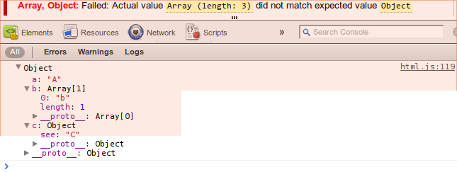
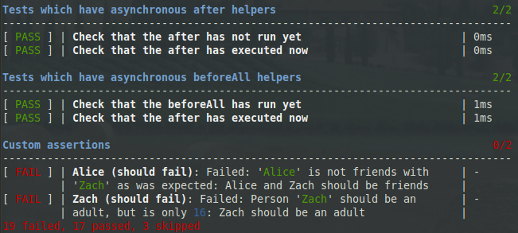

Tyrtle has been designed to be simple and legible, without polluting the global namespace.
var t = new Tyrtle();
t.module("My first module", function () {
this.test("My first test", function (assert) {
var x = Math.sqrt(49);
assert.that(x).is(7).since("7 squared is 49");
});
});
You have a browser with some of the best debugging tools available, so why not use them? The output from your tests is interactive. You can rerun individual tests without needing to reload the page, and even inspect the objects involved in your assertions. Here's a screenshot from Chrome:

If you're working with NodeJS, testing in a browser doesn't make much sense, so you'll need a nice test harness for the terminal. Tyrtle has you covered there too.

You can easily add your own assertions which apply either globally, or just to a single module. By putting custom logic into these assertions, you can tidy up your test code and reuse more code.
t.module("My module with custom assertions", function () {
this.addAssertions({
tallerThan : function (subject, person){
return subject.height > person.height
|| ["{0} is {1}cm tall, which is shorter than {2} ({3}cm)",
subject.name,
subject.height,
person.name,
person.height
]
;
}
});
var Tim = new Person("Tim", 150),
Mary = new Person("Mary", 160)
;
this.test("Tim should be taller than Mary", function (assert) {
assert.that(Tim).is.tallerThan(Mary)();
// fails with message:
// "Tim is 150cm tall, which is shorter than Mary (160cm)"
});
});
Tyrtle itself has no dependencies, however the packaged node test runner requires the node modules: glob and optimist
Lesser Gnu Public License. It's free to use in any project (open source or proprietary), as long as attribution is given.
Nick Fisher (spadgos@gmail.com)
You can download this project in either zip or tar formats.
You can also clone the project with Git by running:
$ git clone git://github.com/spadgos/tyrtle